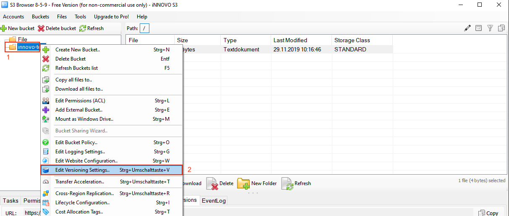
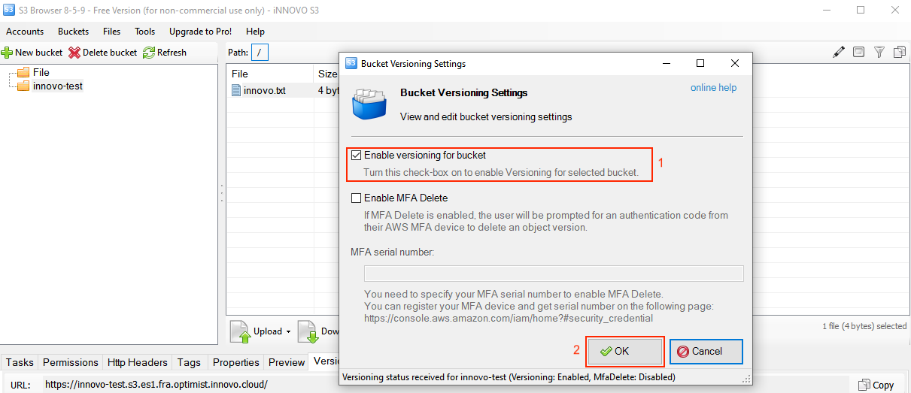
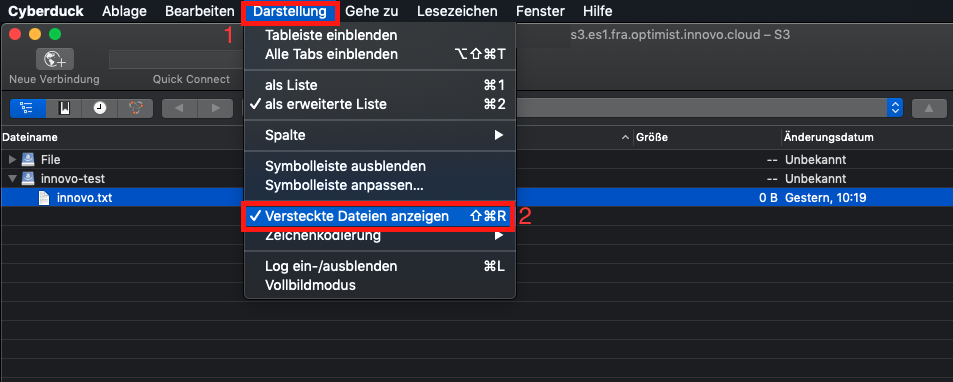
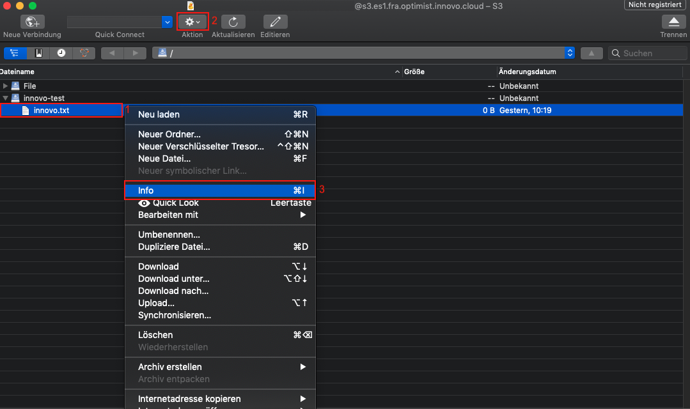
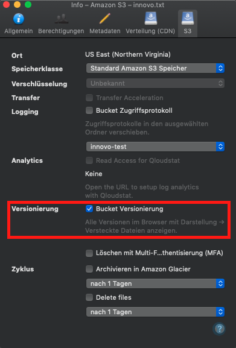
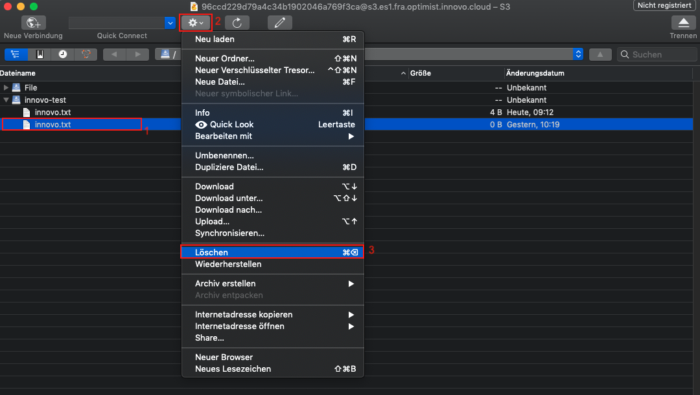

Versionierung aktivieren/deaktivieren und wie eine versioniertes Objekt gelöscht wird
Inhalt:
Versionierung ermöglicht es, mehrere Versionen eines Objekts in einem Bucket aufzubewahren. So können Beispielsweise innovo.txt (Version 1) und innovo.txt (Version 2) in einem einzigen Bucket speichern. Die Versionierung kann Sie vor den Folgen von unbeabsichtigtem Überschreiben oder Löschen bewahren.
S3cmd
Mit S3cmd ist es nicht möglich die Versionierung einzuschalten und/oder versionierte Dateien zu löschen.
S3Browser
Versionierung einschalten
Um die Versionierung zu aktivieren, markieren wir den gewünschten Bucket(1). Machen auf den Bucket einen rechten Mausklick und klicken dann auf “Edit Versioning Settings”(2).

Im sich öffnenden Fenster klicken wir in die Checkbox von “Enable versioning for bucket”(1) und bestätigen dies mit “OK”(2).

Versionierung deaktivieren
Um die Versionierung zu deaktivieren, markieren wir den gewünschten Bucket(1). Klicken dann mit einem rechten Mausklick auf den Bucket und dann auf “Edit Versioning Settings”(2).

Im sich öffnenden Fenster entfernen wir die Checkbox bei “Enable versioning for bucket”(1) und bestätigen dies mit “OK”(2).

Versionierte Datei löschen
Dies ist in der Free-Version von S3Browser nicht möglich.
Cyberduck
Um die verschiedenen Version einer Datei zu sehen, müssen versteckte Dateien angezeigt werden. Diese Option findet man unter Darstellung(1) → Versteckte Dateien anzeigen(2)

Versionierung einschalten
Nach dem Öffnen von Cyberduck, klicken wir auf eine Datei, wo wir die Versionierung(1) für aktivieren wollen. Danach auf Aktion(2) und auf Info(3).

Danach öffnet sich das folgende Fenster, hier setzen wir den Haken bei “Bucket Versionierung”(1):

Versionierung deaktivieren
Um die Versionierung zu deaktivieren, markieren wir wieder eine Datei(1), gehen auf Aktion(2) und auf Info(3).

In dem sich öffnenden Fenster wird der Haken bei “Bucket Versionierung” entfernt.

Versionierte Datei löschen
Hier wird einfach die zu löschende Datei markiert(1) und über Aktion(2) → Löschen(3) entfernt.

Boto3
Bei boto3 brauchen wir zunächst die S3 Kennung, damit ein Script nutzbar ist. Für Details: S3 Kennung erstellen und einlesen #boto3.
Versionierung einschalten
Um nun einen Bucket zu erstellen, müssen wir einen Clienten nutzen und den Bucket dann erstellen. Eine Option sieht so aus:
## Angabe des Buckets in dem die Versionierung aktiviert werden soll
bucket = s3.Bucket('iNNOVO-Test')
## Versionierung aktivieren
bucket.configure_versioning(True)
Ein komplettes Script für boto 3 inkl. Authentifizierung kann so aussehen:
#!/usr/bin/env/python
## Definieren das boto3 genutzt werden soll
import boto3
from botocore.client import Config
## Authentifizierung
s3 = boto3.resource('s3',
endpoint_url='https://s3.es1.fra.optimist.innovo.cloud',
aws_access_key_id='aaaaaaaaaaaaaaaaaaaaaaaaaaaaaaa',
aws_secret_access_key='bbbbbbbbbbbbbbbbbbbbbbbbbbbbbbbb',
)
## Angabe des Buckets in dem die Versionierung aktiviert werden soll
bucket = s3.Bucket('iNNOVO-Test')
## Versionierung aktivieren
bucket.configure_versioning(True)
Versionierung deaktivieren
Wie bei der Aktivierung der Versionierung wird zunächst der Bucket benötigt um dann die Versionierung zu deaktivieren. Eine Option sieht so aus:
## Angabe des Buckets in dem die Versionierung deaktiviert werden soll
bucket = s3.Bucket('iNNOVO-Test')
## Versionierung deaktivieren
bucket.configure_versioning(False)
Ein komplettes Script für boto 3 inkl. Authentifizierung kann so aussehen:
#!/usr/bin/env/python
## Definieren das boto3 genutzt werden soll
import boto3
from botocore.client import Config
## Authentifizierung
s3 = boto3.resource('s3',
endpoint_url='https://s3.es1.fra.optimist.innovo.cloud',
aws_access_key_id='aaaaaaaaaaaaaaaaaaaaaaaaaaaaaaa',
aws_secret_access_key='6229490344a445f2aa59cdc0e53add88',
)
## Angabe des Buckets in dem die Versionierung deaktiviert werden soll
bucket = s3.Bucket('iNNOVO-Test')
## Versionierung deaktivieren
bucket.configure_versioning(False)
Versioniertes Objekt löschen
Um ein versioniertes Objekt komplett zu löschen, ist folgender Befehl hilfreich:
## Angabe des Buckets in dem das versionierte Objekt gelöscht werden soll
bucket = s3.Bucket('iNNOVO-Test')
## Versioniertes Objekt löschen
bucket.object_versions.all().delete('innovo.txt')